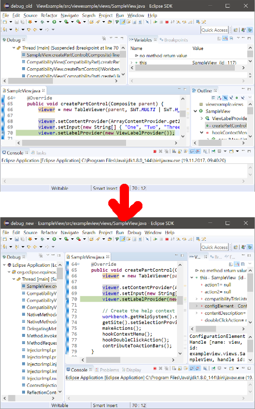

Ctrl+3) now also returns Preference pages that have a keyword matching user
input.





As of M4, Eclipse on Linux is accessible again. Users are able to use assistive technologies seamlessly with SWT GTK3, just as they were able to with GTK2, and without any hangs or crashes.
Automatic-Module-Name header in it
(required for Java 9 compatibility). The quickfix for this problem is to add an Automatic-Module-Name with the same
name as Bundle-SymbolicName. For a newly created plugin project, this is added
automatically. On the Plug-in Development > Compilers preference page in the
Plug-ins tab, there is a new option in the General section to control
the severity of this issue.


org.eclipse.jface.text.reconciler.IReconciler for highlighting to provided content-types.
Reconcilers attached to this extension point that listen to the preference org.eclipse.ui.genericeditor.togglehighlight will be toggled with the "Toggle Highlight" button.
<extension point="org.eclipse.ui.genericeditor.highlightReconcilers">
<highlightReconciler
class="org.eclipse.ui.genericeditor.examples.TagHighlightReconciler"
contentType="org.eclipse.core.runtime.xml"/>
</extension>
- plugin_customization.ini with an entry in the URL notation like:
org.eclipse.ui/default_dialog_settings_rootUrl=http://mycompany/dialog_settings org.eclipse.ui/default_dialog_settings_rootUrl=file:/etc/mycompany/dialog_settings org.eclipse.ui/default_dialog_settings_rootUrl=platform:/plugin/my.company.bundle/dialog_settings
- Directory at the URL specified above, containing <bundle_id>/dialog_settings.xml files for every bundle to customize, e.g: org.eclipse.jdt.ui/dialog_settings.xml.
StyledText.setLineSpacingProvider(StyledTextLineSpacingProvider lineSpacingProvider) can be used to customize different line spacing by implementing the
org.eclipse.swt.custom.StyledTextLineSpacingProvider interface.
For an example, see Snippet369
which implements org.eclipse.swt.custom.StyledTextLineSpacingProvider interface to customize line spacing according the typed text:
text.setLineSpacingProvider(lineIndex -> {
String line = text.getLine(lineIndex).trim();
try {
return Integer.parseInt(line);
} catch(NumberFormatException e) {
return null;
}
});

org.eclipse.jface.text.source.inlined.InlinedAnnotationSupport draws the content of the annotations in the StyledText without the actual payload text nor modifying line numbers.
Each annotation takes care of placing the necessary space, vertically or horizontally, in the StyledText widget to draw the content.
The example InlinedAnnotationDemo draws:
- the colorized square of the rgb color declaration in the line content (use of LineContentAnnotation)
- the result status (OK! / ERROR!) of parse of rgb color declaration in the line header (use of LineHeaderAnnotation)

Import-Package or
Require-Bundle manifest headers. Such dependencies are described by the
Require-Capability and Provide-Capability manifest headers, which p2 can now process.
For example, a consumer bundle may import the API package of an OSGi service (Import-Package) and
also require an implementation of the API (Require-Capability). A provider bundle may also import
the API package in order to implement it (Import-Package) and then declare it
provides an implementation of the service (Provide-Capability). The API package can be distributed
by a third party that maintains the service specification. When the consumer bundle is provisioned p2 will also
provision the API and the provider bundles. The case used to be that p2 would provision only the consumer and
the API, leaving to you the task to discover a provider.